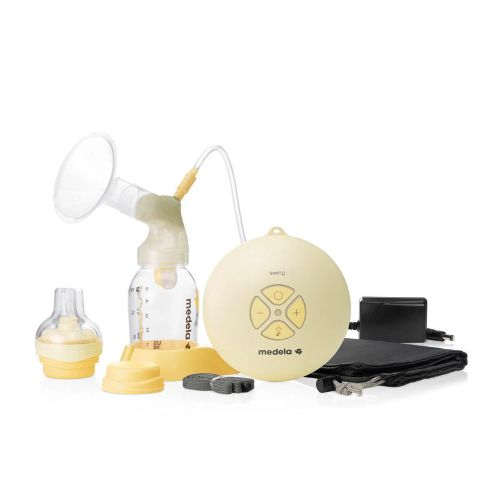
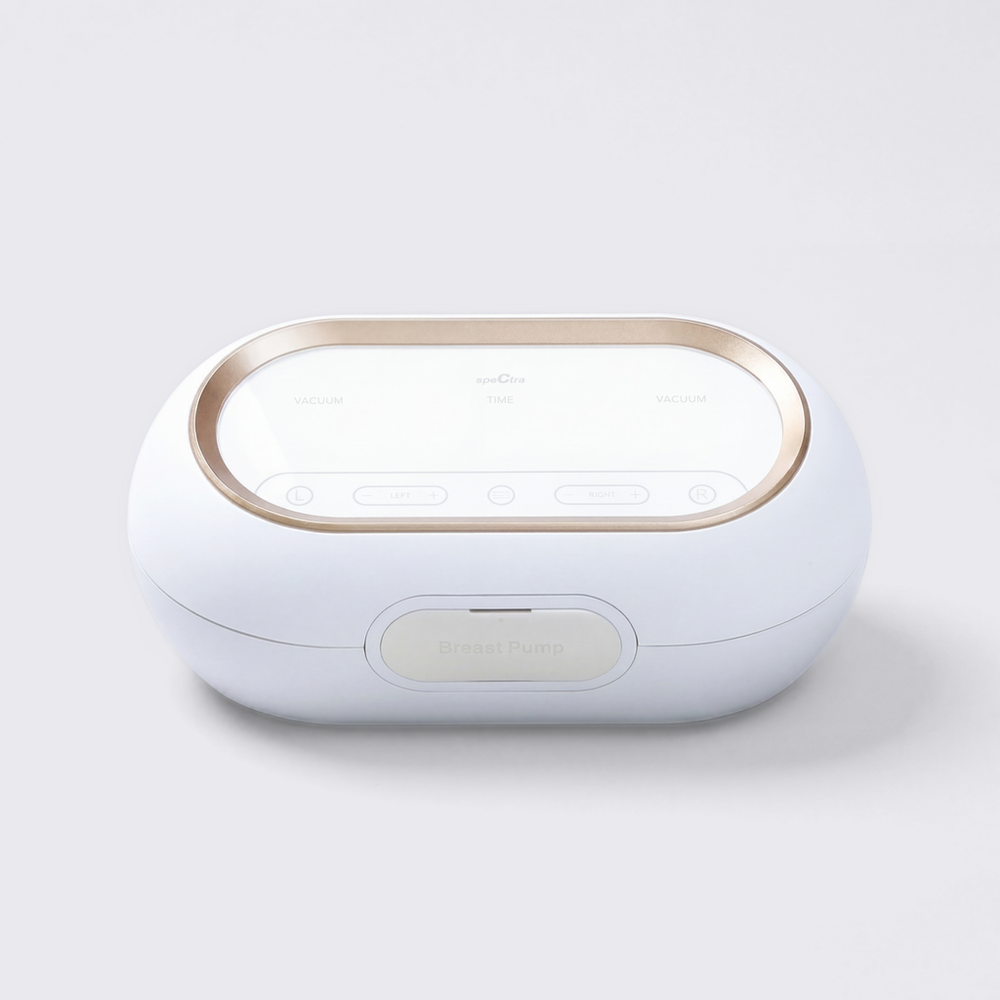
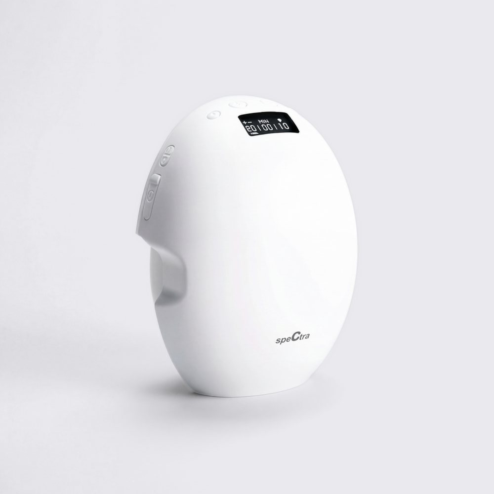
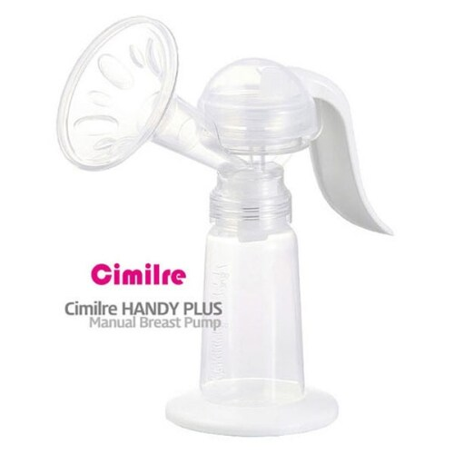

유축기 추천 전동 수동 비교, 복직 앞두고 뭘 골라야 할까요
9월 되면 유독 많이 올라오는 질문이 있더라고요. "복직 전에 유축기 뭐 사야 하나요, 전동이랑 수동 중에 뭐가 나아요?" 저희 집도 복직 앞두고 이것저것 알아보면서 똑같은 고민을 했었는데요, 복직하면 회사에서도 유축을 해야 하는데 자리도 애매하고 가격도 만만치 않다 보니 다들 한 번씩은 고민하게 되는 것 같아요. 이 글은 제가 네 대를 다 직접 써보고 쓴 후기는 아니고, 다나와 가격비교랑 각 브랜드 공식몰 상세페이지를 대조해서 정리한 비교예요. 구동 방식(전동 단관·전동 듀얼·전동 웨어러블·수동)이랑 휴대성, 가격대를 축으로 네 종류를 놓고 비교해볼게요.
복직 시기가 언제인지, 회사에 유축 전용 공간이 있는지 공용 수유실을 다녀야 하는지, 하루에 몇 번이나 유축해야 하는지에 따라 맞는 제품이 꽤 달라져요. 아래 빠른 결론부터 보시고, 자세한 내용은 이어서 볼게요.
- 공용 수유실을 왔다 갔다 하는 게 부담스럽다 → 스펙트라 웨어러블2(핸즈프리)
- 유축 시간을 최대한 줄이고 싶다 → 스펙트라 듀얼 컴팩트(양쪽 동시)
- 예산을 최대한 아끼고 싶다, 자주 쓸 건 아니다 → 시밀레 핸디플러스(수동)
- 예산보다 브랜드·가벼운 무게를 더 본다 → 메델라 스윙(단관, 4종 중 최고가)
복직 D-데이가 다가올수록 챙길 게 하나씩 늘어나죠.
전동이랑 수동, 뭐가 다른가요
전동 유축기는 모터가 일정한 리듬으로 흡입을 만들어주는 방식이라 손이 편하고 시간도 줄일 수 있어요. 대신 가격이 높고 크기·소음이 있는 편이에요. 수동 유축기는 손잡이를 직접 눌러서 압력을 만드는 구조라 가격이 저렴하고 부피도 작지만, 한쪽씩만 되고 계속 손을 움직여야 해서 팔이 피곤할 수 있어요.
전동도 다시 둘로 나뉘는데요, 거치형(메델라 스윙, 스펙트라 듀얼 컴팩트처럼 유축하는 동안 자리를 지켜야 하는 형태)이랑 웨어러블형(브라 안에 넣고 옷을 입은 채로 움직일 수 있는 형태)이에요. 웨어러블은 휴대성이 좋은 대신 대체로 가격이 더 높은 편이더라고요.
같은 전동이어도 거치형과 웨어러블형은 크기부터 차이가 나요.
사기 전에 이것만은 확인하세요
- 흡입압력·소음 수치가 상세페이지에 적혀 있는지부터 확인해보세요.
- 젖병·깔때기 사이즈가 지금 쓰는 것과 맞는지(사이즈 안 맞으면 별도 구매해야 해요).
- 배터리 내장인지 어댑터가 꼭 필요한지.
- 세척해야 하는 파츠가 몇 개인지(파츠가 많을수록 매번 세척 시간이 늘어나요).
한눈에 비교하는 유축기 4종
| 제품명 | 구동 방식 | 가격 | 휴대성·전원 | 추천도 |
|---|---|---|---|---|
| 메델라 스윙 | 전동·단관(거치형) | 274,000원(다나와) | 거치형 · 어댑터 방식(공식몰 구성품에 어댑터 확인) | ★★★☆☆ |
| 스펙트라 듀얼 컴팩트 | 전동·듀얼(거치형) | 168,300원(공식몰 할인)~187,000원(공식몰 정가) | 거치형 · 충전식 | ★★★★☆ |
| 스펙트라 웨어러블2 | 전동·웨어러블 | 133,200원(공식몰 할인)~176,710원(다나와) | 핸즈프리 착용형 · 충전식 | ★★★★☆ |
| 시밀레 핸디플러스 | 수동 | 21,220원~33,000원(다나와) | 수동 · 전원 불필요 | ★★★☆☆ |
*추천도는 가격대·구동방식·용도 적합성을 기준으로 매긴 참고용 점수예요(공식 순위 아님). 아직 다 안 밝혀진 소음·흡입압력 수치는 별점에 반영하지 않았어요(자세한 건 아래 미니표 참고). 가격은 다나와 가격비교·각 공식몰 기준 2026년 9월 1일 확인 값이고, 웨어러블2 할인가(133,200원)는 2026.09.08까지 한시 프로모션이라 이후 148,000원 정가로 돌아갈 수 있어요.
📋 확정된 것 / 아직 안 밝혀진 것
| 제품 | 확정된 것 | 아직 안 밝혀진 것 · 확인처 |
|---|---|---|
| 메델라 스윙 | 구성품 7종(하모니 유축기·핸들·퍼스널핏 깔때기 24mm·커넥터·밸브헤드 및 멤브레인·젖병·젖병 스탠드) | 배터리 내장 여부·소음·흡입압력·무게 — 공식몰 상세페이지 미표기 |
| 스펙트라 듀얼 컴팩트 | 양쪽 유축·듀얼 모터·충전식(공식몰 소개) | 흡입압력·소음·1회 충전 사용시간·구성품 — 공식몰 상세페이지 미표기 |
| 스펙트라 웨어러블2 | 핸즈프리·충전식·마사지 기능(공식몰 소개) | 흡입압력·소음·1회 충전 사용시간·구성품 — 공식몰 상세페이지 미표기 |
| 시밀레 핸디플러스 | 수동 압력 방식(전원 불필요) | 흡입압력·무게·구성품 — 상세페이지 미표기 |
위 표에 없는 스펙(무게·소음·흡입압력 수치 등)은 네 제품 모두 공식몰·다나와 상세페이지에 명시돼 있지 않아서 이 표 하나로 모아뒀어요. 구매 전엔 판매처에 직접 문의하시는 걸 추천드려요.
제품별로 자세히 볼게요

제품 이미지에 보이는 구성이에요.
이미지: 메델라 공식몰
메델라 스윙 — 가볍게 들고 다니는 전동을 원할 때
메델라 공식몰에서는 이 제품을 "2-Phase 기술이 탑재된 유축기 중 가장 작고 가벼운 제품"이라고 소개하고 있어요. 핸드백에 들어갈 수 있을 정도로 작다고도 소개하고 있고요(제조사가 내세우는 표현이에요). 단관이라 한쪽씩 유축하는 방식이고, 전동 중에서는 상대적으로 가벼운 축에 속해요.
공식몰 「포함된 상품」에는 하모니 유축기·하모니 핸들·퍼스널핏 깔때기 24mm·커넥터·밸브헤드 및 멤브레인·젖병·젖병 스탠드까지 7가지가 나와 있고, 구성품에 어댑터도 있어서 전원은 어댑터 방식으로 보여요.
👍 브랜드 인지도가 높고 전동 중에서는 무난한 크기예요. 👎 단관이라 양쪽을 한 번에 못 하고, 거치형이라 유축하는 동안은 자리를 지켜야 해요.
가격은 다나와 기준 274,000원(판매처 4곳, 2026.09.01 확인)이에요.
쿠팡 실시간 최저가 보기 →듀얼은 양쪽을 동시에, 단관은 한쪽씩 — 튜빙 개수부터 다르죠.

양쪽 흡입압을 따로 조절하는 LEFT·RIGHT 버튼이 상단에 나란히 있어요.
이미지: 스펙트라 공식몰
스펙트라 듀얼 컴팩트 — 유축 시간을 절반으로 줄이고 싶을 때
스펙트라 공식몰은 "양쪽 유축 / 듀얼 모터 / 충전식"으로 이 제품을 소개하고 있어요. 양쪽을 동시에 할 수 있어서 단관보다 유축 시간을 줄일 수 있다는 게 핵심이에요.
👍 듀얼이라 유축 시간이 줄고, 충전식이라 매번 콘센트를 찾지 않아도 돼요. 👎 거치형이라 자리를 지켜야 하고, 단관보다 가격이 높아요.
가격은 다나와 기준 170,880원(판매처 4곳)이고, 공식몰은 정가 187,000원에 할인가 168,300원으로 표기돼 있었어요(2026.09.01 확인).
쿠팡 실시간 최저가 보기 →
브라 안에 쏙 들어가는 계란형 본체에 디지털 디스플레이가 달려 있어요.
이미지: 스펙트라 공식몰
스펙트라 웨어러블2 — 공용 수유실 왕복이 부담스러울 때
공식몰 소개는 "핸즈프리, 충전식, 마사지"예요. 브라 안에 넣고 옷을 입은 채로 유축할 수 있어서, 자리를 옮겨야 하거나 공용 수유실을 써야 하는 근무 환경에서 특히 도움이 될 만한 형태예요. 참고로 상위 모델인 '9+'도 있지만, 다나와 가격비교가 중지된 상태라(2026.09.01 확인) 이번 비교표에는 넣지 않았어요.
👍 핸즈프리라 이동이 자유롭고 자리를 안 지켜도 돼요. 👎 거치형보다 흡입력이 약할 수 있다는 이야기가 있지만 실측 수치로 확인은 못 했어요.
가격은 공식몰 기준 정가 148,000원에 할인가 133,200원이고, 다나와에는 구성(세트/단품)에 따라 약 135,000원~176,710원으로 올라와 있었어요(2026.09.01 확인). 이 할인가는 한시 프로모션(2026.09.08까지)이라 이후 달라질 수 있어요.
쿠팡 실시간 최저가 보기 →
깔때기·실린더·손잡이·받침대 달린 젖병까지, 구조가 단순해서 한눈에 보여요.
이미지: 다나와 상품페이지
시밀레 핸디플러스 — 예산을 최대한 아끼고 싶을 때
손잡이를 눌러서 압력을 만드는 일반적인 수동 유축기 구조예요. 다나와에 등록된 판매처만 30곳이 넘을 정도로 흔하게 유통되는 편이에요. 전동 제품들에 비해 절대적인 가격이 낮은 게 가장 큰 장점이에요.
👍 가격이 확실히 저렴하고, 전원이 필요 없어서 고장 걱정이 적어요. 👎 한쪽씩만 되고, 손으로 계속 눌러야 해서 팔이 아플 수 있어요. 하루에 여러 번 유축해야 하는 복직 초반엔 부담스러울 수 있어요.
가격은 다나와 기준 21,220원~33,000원(판매처 30여 곳, 2026.09.01 확인)이에요.
쿠팡 실시간 최저가 보기 →상황별로 정리하면
정답이 딱 하나 있는 건 아니고, 근무 환경이랑 하루에 몇 번 유축해야 하는지에 따라 맞는 제품이 달라지는 것 같아요.
전용 유축 공간이 있다면 → 시간부터 줄이는 스펙트라 듀얼 컴팩트가 맞아요. 공용 수유실을 오가야 한다면 → 스펙트라 웨어러블2가 편해요. 재택 병행에 하루 2~3번이면 → 시밀레 핸디플러스로도 충분해요. 하루 4번 이상이면 → 전동이 나아요. 자리 지켜도 되면 메델라 스윙, 시간까지 줄이려면 스펙트라 듀얼 컴팩트예요.
혹시 제가 정리한 정보랑 다르면 댓글로 알려주세요! 복직 준비하시는 분들께 조금이나마 도움이 됐으면 좋겠네요.
✔ 육아용품·복직 준비 같이 보기 좋은 내용
· 젖병세정제 비교는 블로그의 「젖병세정제 추천, 신생아 때부터 쭉 쓴 블랑101 리퀴드 솔직후기 + 인기제품 비교」 글을 참고해주세요(검색어: 블랑101).
· 순한 보습제가 궁금하시면 「돌아기 순한 보습제 추천, 아토팜·일리윤·무스텔라·그린핑거 4종 비교」 글도 참고해주세요(검색어: 돌아기 보습제).
· 임신·출산 준비 과정이 궁금하시면 임신 극초기증상 정리, 착상부터 생리 예정일 전후까지 살펴봤어요 글도 참고하세요.